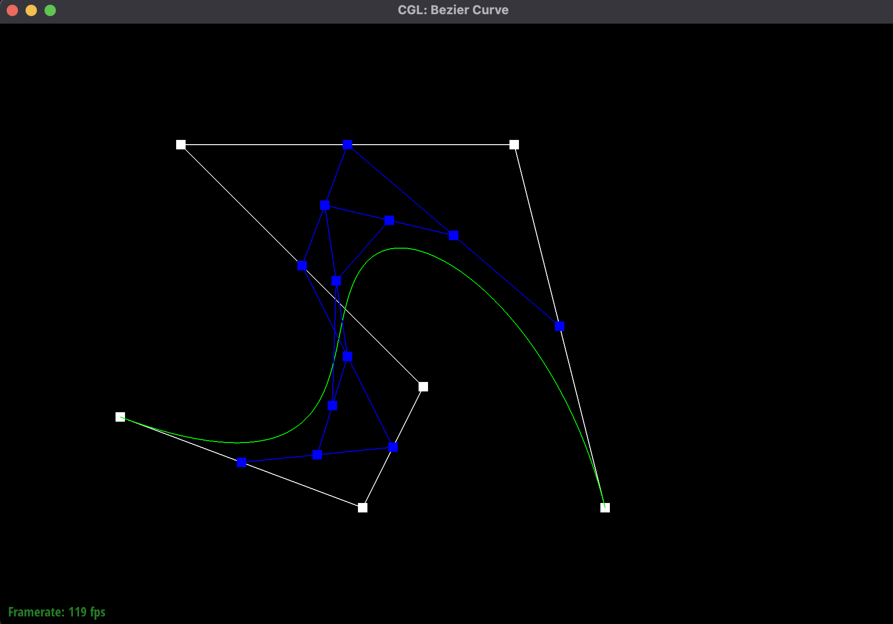
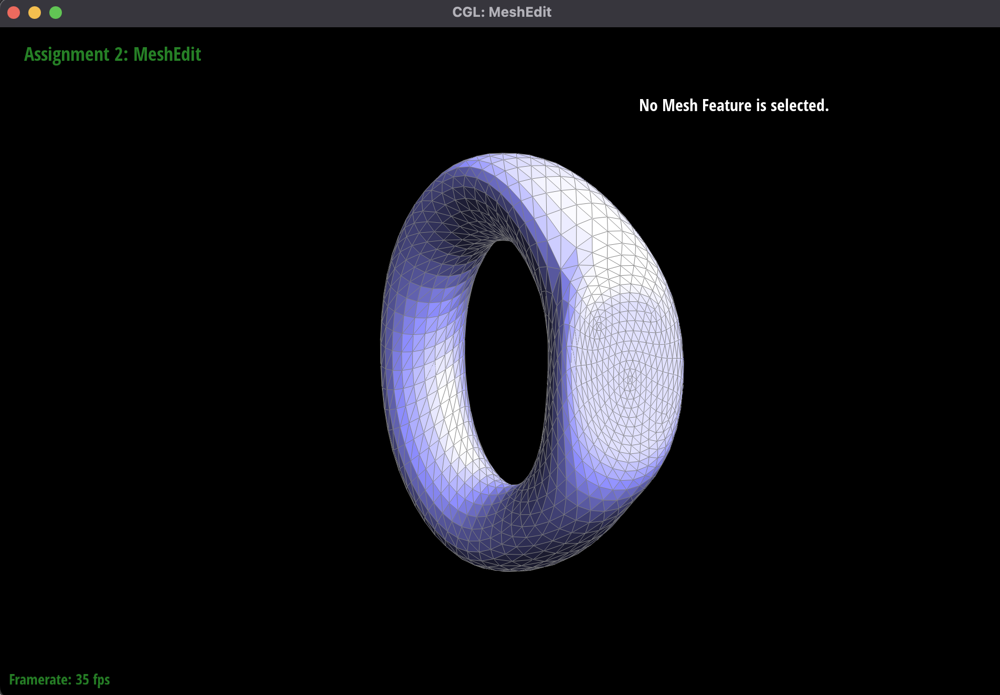

Overview
In this project, I implemented logic for bezier curves and surfaces in section 1, and then went onto implement various mesh functionality in section 2. Specifically, in section 2, I implemented the logic for area weighted vertex normals, edge flipping, edge splitting, and mesh upsampling through loop subdivision.
Section I: Bezier Curves and Surfaces
Part 1: Bezier Curves with 1D de Casteljau Subdivision
Briefly explain de Casteljau's algorithm and how you implemented it in order to evaluate Bezier curves.De Casteljau's algorithm is a recursive algorithm used to compute points on a bezier curve given a set of control points. Essentially, it recursively calculates points between each adjacent control point pair using a given parameter t until we are left with one point, which is our final point on the curve evaluated at parameter t. I implemented a single step of this algorithm in 2D in this part by creating a new vector of points consisting of the calculated "midpoint" between each adjacent control point pair. Later in part 2, I implement a function that fully evaluates a bezier curve given a set of control points and a parameter t.
Take a look at the provided .bzc files and create your own Bezier curve with 6 control points of your choosing. Use this Bezier curve for your screenshots below.
Show screenshots of each step / level of the evaluation from the original control points down to the final evaluated point. Press E to step through. Toggle C to show the completed Bezier curve as well.
|
|
|
|
|

|
|
|
|
Show a screenshot of a slightly different Bezier curve by moving the original control points around and modifying the parameter \(t\) via mouse scrolling.
Part 2: Bezier Surfaces with Separable 1D de Casteljau
Briefly explain how de Casteljau algorithm extends to Bezier surfaces and how you implemented it in order to evaluate Bezier surfaces.
De Casteljau's algorithm can be extended to Bezier surfaces by first evaluating the Bezier curve at each row
of
the n x n control points matrix evaluated at a given u value. We now have n points, which we further
evaluate
using de Casteljau's algorithm again at a given v value. This gives us a single point on the surface
evaluated at
u and v.
To implement this, I rewrote what is essentially the same method as what I wrote in part 1 but for 3D
vectors.
Then, I wrote a function that would fully evaluate the algorithm for a vector of points at a given scalar
value.
Finally, I implemented a full evaluate function that would output a 3D point on the surface evaluated at u
and v
following the procedure I described above.
Show a screenshot of bez/teapot.bez (not .dae) evaluated by your implementation.
Section II: Triangle Meshes and Half-Edge Data Structure
Part 3: Area-Weighted Vertex Normals
Briefly explain how you implemented the area-weighted vertex normals.
To calculate the area-weighted vertex normals, I iterate over the faces adjacent to the vertex, calculate their
areas, then use that to weight the normal of each face, adding them all together. At the end, I normalize the
result and spit it back.
To calculate the area of a face, I get the vectors from the first vertex to the second and third vertices, then
take the cross product of those two vectors. The magnitude of the resulting vector divided by 2 is the area of the
triangle. This is multiplied by the normal of the face and added to a running total of the weighted normals that
is normalized at the end.
Show screenshots of dae/teapot.dae (not .bez) comparing teapot shading with and without vertex normals. Use Q to toggle default flat shading and Phong shading.
|
|
|
Part 4: Edge Flip
Briefly explain how you implemented the edge flip operation and describe any interesting implementation / debugging tricks you have used.First, I check if the edge is a boundary edge, and if it is, I return immediately. Then, I get all relevant mesh structures like halfedges, edges, vertexes, and faces. I used the picture of a before and after on the project spec page to help me understand what mesh structure in the before corresponded to what mesh structure in the after. For every mesh structure, I reassign it's related pointers even if it might not have changed, as per the advice on the spec. I feel like this helped a lot as it made me consider every possible thing that could have changed and might have led to me not having to debug anything! (luckily)
Show screenshots of the teapot before and after some edge flips.
|
|
|
Write about your eventful debugging journey, if you have experienced one.
Luckily, I didn't have to debug at all! It worked first try :)
Part 5: Edge Split
Briefly explain how you implemented the edge split operation and describe any interesting implementation / debugging tricks you have used.Similarly to how I implemented the edge flip, I first check for a boundary edge and return if it is one (I didn't do the extra credit). I then get all relevant mesh structures and create new mesh structures for the new elements that exist after the split. I use the before and after pictures in the spec again to guide the way that I identify and assign the relevant pointers for each mesh structure. Didn't have to debug!
Show screenshots of a mesh before and after some edge splits.
|
|
|
Show screenshots of a mesh before and after a combination of both edge splits and edge flips.
|
|
|
Write about your eventful debugging journey, if you have experienced one.
Didn't have to debug!
If you have implemented support for boundary edges, show screenshots of your implementation properly handling split operations on boundary edges.
Did not do
Part 6: Loop Subdivision for Mesh Upsampling
Briefly explain how you implemented the loop subdivision and describe any interesting implementation / debugging tricks you have used.
To implement loop subdivision, I essentially followed the recommended way to do it in the spec and in the comments
of the skeleton. First, I precompute the new positions of all "old" vertices in the input mesh using the formula
described in the spec. This takes into account all neighboring vertex positions. Then, I precompute the updated
vertex positions of new vertices that will be created when splitting each edge. Next, I split every original edge
in the mesh and set the position of the new vertex to its precomputed position. I then flip every new edge that
connects an old and a new vertex, and finally, I set the position of the old vertices to their precomputed
positions.
In terms of implementation, I had to edit my edge split function a little bit to correctly set the isNew property
of the appropriate edges and new vertex, but other than that, I mostly stuck to the way that it was recommended to
do it in the spec and in the comments of the skeleton. I didn't have to debug anything!
Take some notes, as well as some screenshots, of your observations on how meshes behave after loop subdivision. What happens to sharp corners and edges? Can you reduce this effect by pre-splitting some edges?
After loop subdivision, the mesh becomes smoother and more rounded. You can see this very clearly in the below images, as the torus becomes a lot less sharp and more rounded to become a lot more like a rounded ring/donut. Sharp corners and edges get rounded out as more vertices and edges get added to the mesh, which allows for a smoother surface. The shape also typically sees a reduction in total volume. If you pre-split some edges, some sharp corners and edges can remain flat/sharp even after loop subdivision.
|
|
|

|
|
|
|

|
Load dae/cube.dae. Perform several iterations of loop subdivision on the cube. Notice that the cube becomes slightly asymmetric after repeated subdivisions. Can you pre-process the cube with edge flips and splits so that the cube subdivides symmetrically? Document these effects and explain why they occur. Also explain how your pre-processing helps alleviate the effects.
After several iterations of loop subdivision, the cube definitely becomes slightly asymmetric. This is because each face of the cube only has one edge splitting it across a diagonal instead of two edges (or four technically) going across both diagonals. Due to the way that loop subdivision works to upsample meshes, this results in an asymmetrical mesh. If we pre process the cube, splitting the diagonal edge across each face, we will arrive at a symmetric mesh at the end.
|
|
|
|
|

|
|
|
|
As you can see, the pre-processed cube with edge splits on each face is symmetrical after loop subdivision, unlike the normal cube mesh.
If you have implemented any extra credit extensions, explain what you did and document how they work with screenshots.
Didn't do it :(
Part 7 (Optional, Possible Extra Credit)
Save your best polygon mesh as partsevenmodel.dae in your docs folder and show us a screenshot of the mesh in your write-up.Didn't do it :(
Include a series of screenshots showing your original mesh and your mesh after one and two rounds of subdivision. If you have used custom shaders, include screenshots of your mesh with those shaders applied as well.
Didn't do it :(
Describe what you have done to enhance your mesh beyond the simple humanoid mesh described in the tutorial.
Didn't do it :(
link to webpage